What is this?
這是什麼？

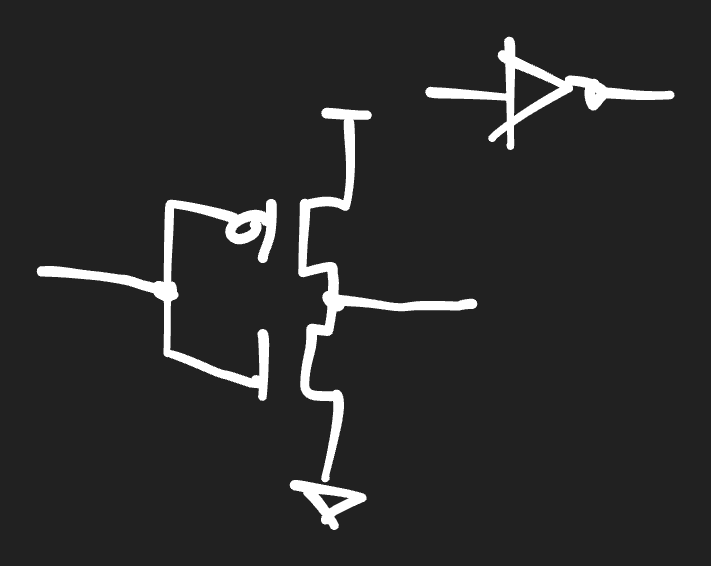
A chronological handout of user prompts, AI responses, and 16 drawing iterations.
Follow the prompts and drawings in order. Earlier drawings contain documented errors; use the final versions when preparing teaching material. User prompts appear in English and Taiwan Mandarin. Source quotations keep their original language.
# AGENTS.md instructions <INSTRUCTIONS> I am practicing writing prompts in English. Before responding, repeat my prompt with corrections (not revisions), and output the result in plain English. English, English, English .... When users request audio or podcast generation, use Taiwan Mandarin written in Traditional Chinese and the fixed zh-TW-HsiaoChenNeural cloud voice. All session output should be in plain English by default, but it can be switched to plain Taiwan Mandarin when the user requests it. All session output should be in plain English by default, but it can be switched to plain Taiwan Mandarin when the user requests it. </INSTRUCTIONS> <environment_context> <cwd>/Users/jyang/Documents/Codex/2026-10-02/record-replay-plugin-record-and-replay</cwd> <shell>zsh</shell> <current_date>2026-10-02</current_date> <timezone>Asia/Taipei</timezone> <filesystem><workspace_roots><root>/Users/jyang/Documents/Codex</root><root>/Users/jyang/Documents/Codex/2026-10-02/record-replay-plugin-record-and-replay</root><root>/Users/jyang/.codex/visualizations/2026/10/01/01a0f95c-81c2-7d01-a626-a0dc181c3b20</root></workspace_roots><permission_profile type="managed"><file_system type="restricted"><entry access="read"><special>:root</special></entry><entry access="write"><path>/Users/jyang/Documents/Codex</path></entry><entry access="write"><path>/Users/jyang/Documents/Codex/2026-10-02/record-replay-plugin-record-and-replay</path></entry><entry access="write"><path>/Users/jyang/.codex/visualizations/2026/10/01/01a0f95c-81c2-7d01-a626-a0dc181c3b20</path></entry><entry access="write"><special>:slash_tmp</special></entry><entry access="write"><special>:tmpdir</special></entry><entry access="write"><path>/private/tmp</path></entry><entry access="write"><path>/private/var/folders/2h/k7kbzrq164z77ql_71c8663c0000gn/T</path></entry><entry access="read"><path>/Users/jyang/Documents/Codex/.git</path></entry><entry access="read"><path>/Users/jyang/Documents/Codex/2026-10-02/record-replay-plugin-record-and-replay/.git</path></entry><entry access="read"><path>/Users/jyang/.codex/visualizations/2026/10/01/01a0f95c-81c2-7d01-a626-a0dc181c3b20/.git</path></entry><entry access="read"><path>/Users/jyang/Documents/Codex/.agents</path></entry><entry access="read"><path>/Users/jyang/Documents/Codex/2026-10-02/record-replay-plugin-record-and-replay/.agents</path></entry><entry access="read"><path>/Users/jyang/.codex/visualizations/2026/10/01/01a0f95c-81c2-7d01-a626-a0dc181c3b20/.agents</path></entry><entry access="read"><path>/Users/jyang/Documents/Codex/.codex</path></entry><entry access="read"><path>/Users/jyang/Documents/Codex/2026-10-02/record-replay-plugin-record-and-replay/.codex</path></entry><entry access="read"><path>/Users/jyang/.codex/visualizations/2026/10/01/01a0f95c-81c2-7d01-a626-a0dc181c3b20/.codex</path></entry><entry access="read"><path>/Users/jyang/Documents/Codex/.aws</path></entry><entry access="read"><path>/Users/jyang/Documents/Codex/2026-10-02/record-replay-plugin-record-and-replay/.aws</path></entry><entry access="read"><path>/Users/jyang/.codex/visualizations/2026/10/01/01a0f95c-81c2-7d01-a626-a0dc181c3b20/.aws</path></entry></file_system></permission_profile></filesystem> </environment_context>
What is this?
這是什麼？

It looks like a hand-drawn CMOS inverter: a PMOS transistor on top connected to the supply, an NMOS transistor below connected to ground, and their gates tied together as the input. The joined transistor terminals on the right form the output.
The small symbol at the top right may be a diode, but it isn’t clearly connected to the inverter in the drawing.
Output in Taiwan Mandarin.
請用臺灣華語回答。
這看起來像手繪的 CMOS 反相器：上方是接電源的 PMOS，下方是接地的 NMOS，兩個電晶體的閘極相連作為輸入；右側相連的端點則是輸出。
右上角的小符號可能是二極體，但圖中看不出它是否與反相器相連。
Redraw the figure.
請重畫這張圖。
I’ll redraw the likely CMOS inverter as a clean circuit diagram, keeping the small diode-like symbol separate because its connection is unclear.
Create a clean, textbook-style black-and-white circuit schematic on a plain white background, landscape 4:3. Redraw the main hand-drawn circuit as a CMOS inverter: upper PMOS transistor connected from VDD at top to a shared output node at the right; lower NMOS transistor connected from that shared output node to a ground symbol at bottom; both transistor gates connected together to an input wire entering from the left. Use standard clear MOSFET schematic symbols and neat straight thin black lines. Label input 'Vin', output 'Vout', top supply 'VDD', bottom ground. In a separate small area at the top right, include an isolated diode symbol matching the extra disconnected symbol in the source sketch, with no wire connecting it to the inverter. No decorative elements, no color, no explanatory text beyond the four labels. Ensure electrical topology is clear and correct.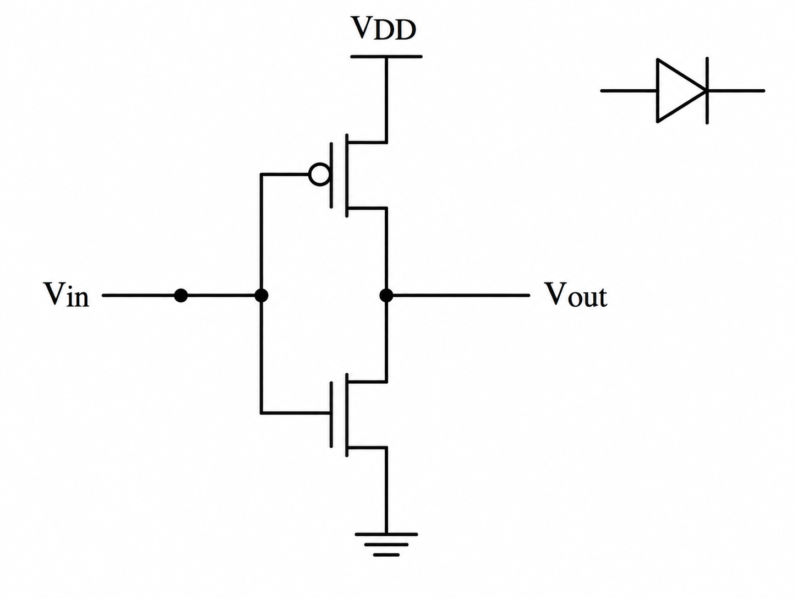
Here’s a clean redraw of the CMOS inverter, with the separate diode-like symbol shown unconnected:
Original response contained an empty image URL.
Archive note: the original response contained an empty image URL. Its generated figure is preserved in the following iteration entries.
The diode-like symbol is an inverter. Redraw it and add a truth table to the figure.
那個看起來像二極體的符號是反相器。請重畫，並在圖中加上真值表。
I’ll update the figure to show the CMOS transistor circuit and the inverter logic symbol, with its truth table.
Edit the existing image into a precise, clean textbook infographic on white background. The small symbol at the upper right is NOT a diode: it is the standard logic inverter (NOT gate), drawn as a triangle pointing right with a small output bubble, with input wire on left and output wire on right. Keep the main CMOS inverter schematic on the left: PMOS above NMOS, common gates as Vin entering from left, joined drains at right labeled Vout, PMOS source to VDD and NMOS source to ground. On the right side, show the corresponding inverter logic symbol clearly, then a small truth table beneath it with headers 'A' and 'Y = NOT A', rows '0 | 1' and '1 | 0'. Clear black strokes, accurate conventional symbols, balanced layout, readable labels, no extra components or decorative details.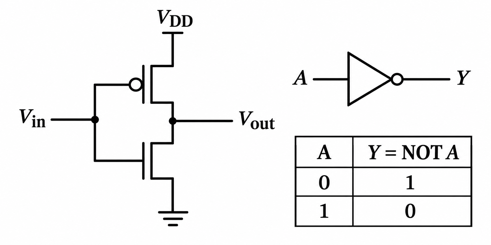
Create a clean educational circuit figure on a white background, landscape layout. Left half: conventional CMOS inverter transistor schematic, with PMOS connected from VDD to output node, NMOS connected from output node to ground, their gates tied together and driven by input A, output labeled Y. Use standard transistor symbols and clear wiring. Right half: standard NOT logic gate symbol, a triangle pointing right with a small circle at output, input A and output Y. Beneath it place a readable truth table with columns 'A' and 'Y = NOT A'; rows '0 | 1' and '1 | 0'. Black lines and text, high contrast, precise electrical connections, no extra diode, no extraneous text.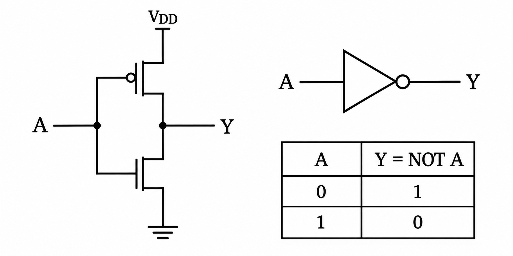
Done. The updated figure shows the CMOS inverter, its NOT-gate symbol, and the truth table.
Refer to this figure and draw a two-input NAND gate.
請參考這張圖，畫一個雙輸入 NAND 邏輯閘。
I’ll make a matching figure with the transistor circuit, NAND symbol, and truth table.
Create a clear educational figure matching the visual style and layout of the referenced CMOS inverter figure, but show a TWO-INPUT CMOS NAND gate. White background, black lines and text, landscape layout. Left: correct standard CMOS NAND transistor-level schematic. Upper pull-up network has two PMOS transistors in parallel from VDD to output Y, with gates driven separately by inputs A and B. Lower pull-down network has two NMOS transistors in series from Y to ground, with gates driven by A and B respectively. Clearly draw the intermediate node between the series NMOS devices. Right: standard 2-input NAND logic symbol: AND-gate outline with two input wires A and B and a small inversion bubble at output Y. Under it include a truth table titled 'NAND' with columns A, B, Y = NOT(A AND B), and rows 0 0 1; 0 1 1; 1 0 1; 1 1 0. Accurate conventional circuit topology, readable labels, neat straight wires, no extra components.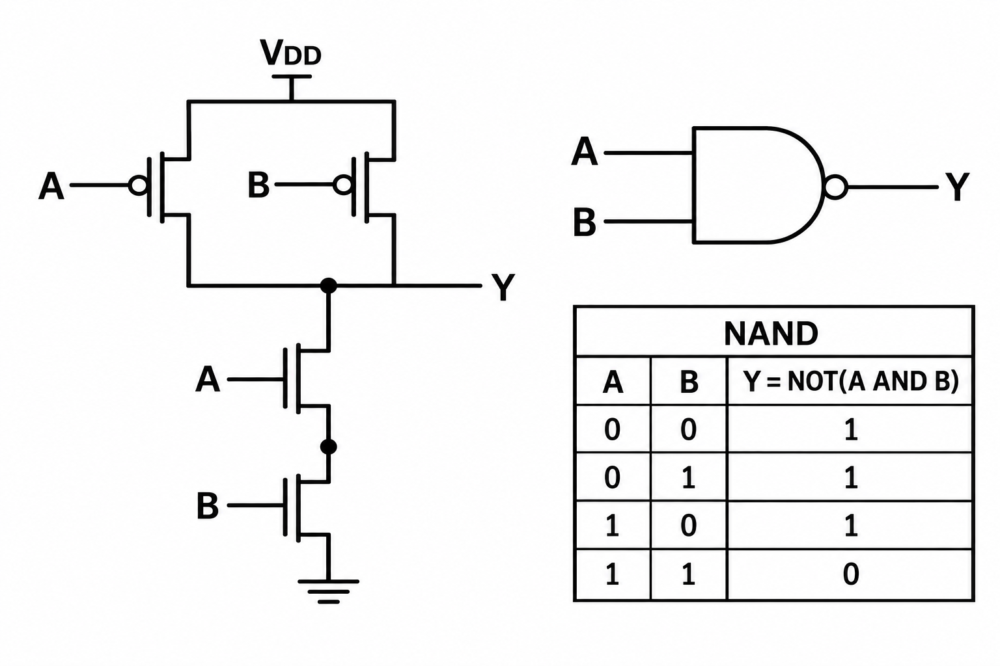
Done. The figure shows the CMOS transistor circuit, NAND logic symbol, and truth table.
Fix the figure. Dots should appear only at branches where three or more wires meet.
請修正這張圖。只有三條或更多導線交會的分支接點才要畫實心圓點。
I’ll remove the junction dot from the two-wire output connection and keep the dot at the three-wire junction between the pull-up network, output, and pull-down network.
Edit the referenced CMOS 2-input NAND figure, preserving the layout, typography, circuit topology, logic symbol and truth table. Fix junction dot conventions: show a filled junction dot ONLY at a branch where three or more wires meet. In particular, remove the filled black dot at the output Y connection if it is merely a two-wire connection; retain a filled dot at the central output junction where the output wire and the pull-up and pull-down network connections (three or more wire branches) meet, and at the internal NMOS series midpoint only if three or more wires actually branch there (otherwise remove it). Ensure all wire connections remain electrically correct and visually unambiguous. Preserve labels and truth-table values exactly.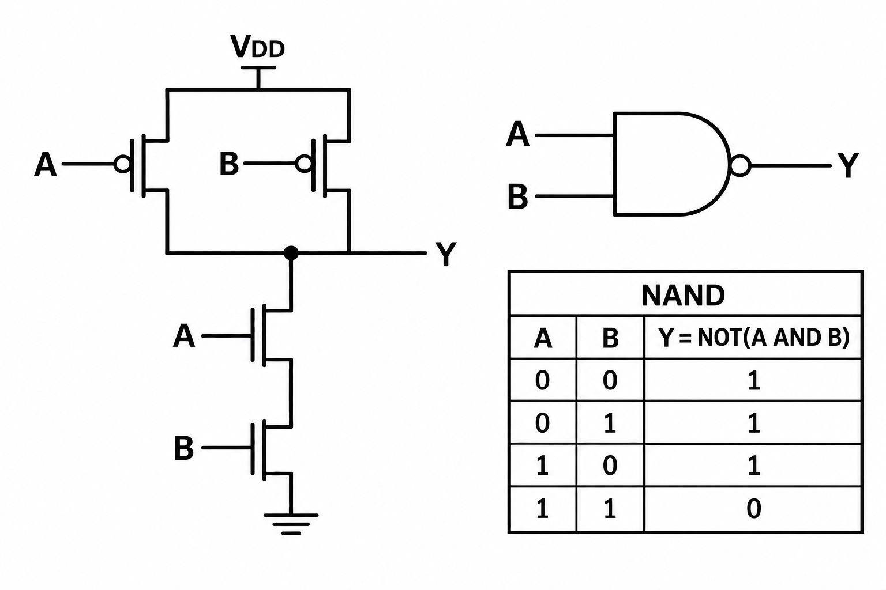
Done. The output junction dot remains where three connections meet; the dot at the two-wire NMOS midpoint is removed.
You still missed one dot.
你還漏了一個接點圓點。
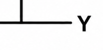
You’re right: the attached crop shows the output branch without a junction dot. I’ll add a dot where the vertical wire meets the output wire.
Edit the previous complete CMOS 2-input NAND diagram. Add a filled black junction dot exactly where the vertical wire from the pull-down network meets the horizontal output wire labeled Y; this is the missing dot shown in the user's crop. Keep all other content and wiring unchanged. Respect the convention that junction dots appear only where three or more wires meet. Retain the correct NAND transistor network, symbol, and truth table.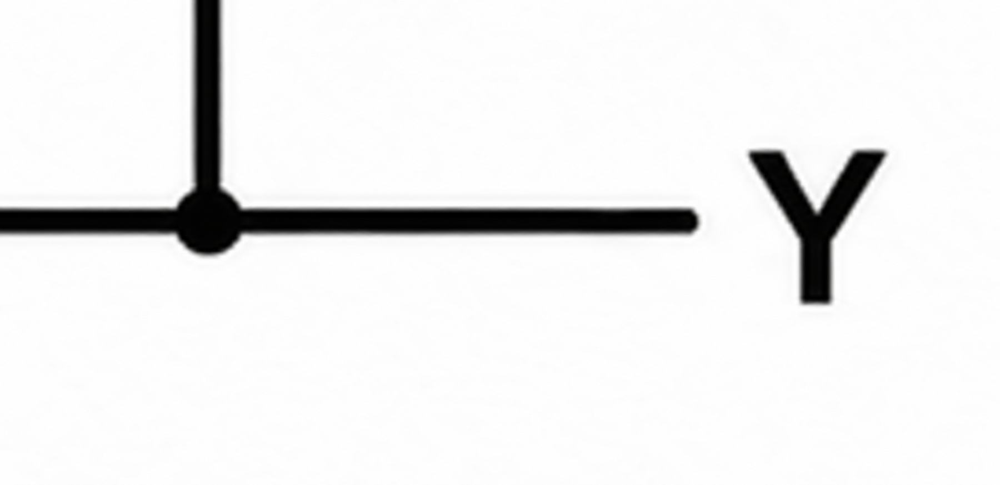
Draw a complete clean educational CMOS 2-input NAND gate infographic, white background, black line art, landscape. On left, transistor-level CMOS NAND: two PMOS transistors in parallel from VDD to output Y, with A and B driving their gates; two NMOS transistors in series from Y to ground, A driving upper NMOS and B lower. At the central output node, where the two PMOS drains, upper NMOS drain, and output wire join, show a filled black junction dot. At the midpoint between series NMOS devices, which is only a two-device series connection with no branch, show NO dot. Do not put dots at any two-wire crossings/connections. On upper right draw standard NAND gate symbol: AND shape with two inputs A, B and output inversion bubble labeled Y. Below put truth table columns A, B, Y = NOT(A AND B), rows 0 0 1; 0 1 1; 1 0 1; 1 1 0. Accurate wiring, readable text, polished technical textbook figure.
You’re right—the output node where the pull-down branch joins the horizontal Y wire needs a dot. I’ve added it; the series NMOS midpoint remains dot-free.
Parse the message.
請解析這則訊息。
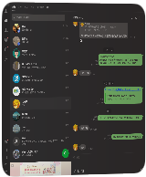
I’ll inspect the LINE window shown in your attachment and extract the visible message text.
I can’t access LINE in this session; access was not approved. The screenshot in your message is too small to read the chat text. Please attach a higher-resolution crop of the specific message, and I can transcribe and explain it.
Redraw the figure to fix the missing dots.
請重畫這張圖，把漏掉的接點圓點補上。
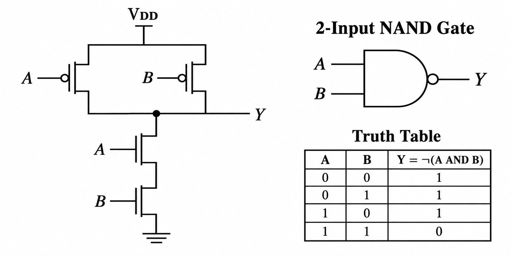
I’ll add dots at the VDD branch and the right PMOS connection to the output wire, keeping the existing output junction dot.
I’m using the imagegen skill to make this correction. There should be exactly three filled junction dots in the transistor circuit.
Precisely edit this complete circuit figure; preserve all layout, typography, wires, transistor symbols, NAND symbol and truth table. Add exactly TWO missing solid black circular junction dots of the same size as the existing dot: (1) at the T junction where the vertical VDD supply wire meets the top horizontal wire feeding the parallel PMOS sources, approximately x497 y156 in the 1774x887 original; (2) at the T junction where the RIGHT PMOS drain vertical wire meets the horizontal Y output wire, approximately x711 y393. KEEP the existing solid dot at x540 y393 where the NMOS branch meets the horizontal output wire. Final transistor circuit must have exactly THREE filled junction dots: VDD T branch, NMOS/output T branch, right PMOS/output T branch. No filled dot at the series NMOS midpoint or at any two-wire elbow. The hollow inversion bubbles on PMOS gates and logic symbol must remain hollow. This is a minimal edit: only add the two specified filled dots, do not redraw or change anything else.Added the two missing dots at the VDD branch and the right PMOS output branch. All three wire junctions now have filled dots.
Apply another symbol style to represent Boolean equations.
請改用另一種符號表示布林運算式。

I’ll use Y = , with a dot for AND and an overbar for NOT, in the truth-table heading.
Make a minimal precise edit to the supplied NAND circuit figure. Change ONLY the Boolean equation text in the third truth-table column header. Replace 'Y = ¬(A AND B)' with conventional Boolean algebra notation: Y = an OVERBAR over the entire product A · B. Render Y = followed by A centered multiplication dot B, with ONE continuous horizontal overbar spanning BOTH A and B and the dot. The overbar means the complement of the entire AND product. Use clear professional math typography and center this formula within its existing header cell. Preserve every other feature exactly: all three filled junction dots (VDD branch, center output branch and right PMOS/output branch), all transistor wires, hollow inversion bubbles, NAND logic symbol, title, table borders, labels and four truth-table rows. Do not change gate style or circuit layout.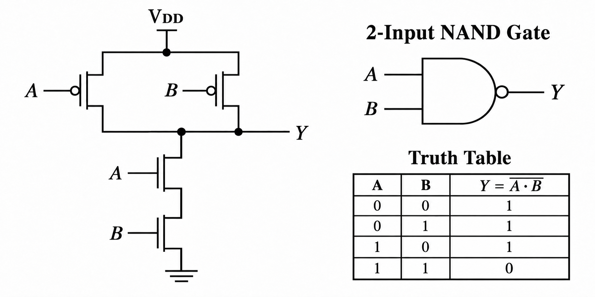
Updated to Y = : the dot means AND, and the overbar means NOT.
Remember to draw CMOS schematics and logic symbols/equations in this style.
請記住，以後畫 CMOS 電路圖、邏輯符號和布林運算式時，都使用這個風格。
I’ll save this preference: black-and-white diagrams, filled dots at every junction with three or more wires, hollow inversion bubbles, and Boolean equations using a dot for AND and an overbar for NOT.
Saved your preference. Future CMOS figures will use this layout, junction-dot convention, logic-symbol style, and Boolean notation such as Y=.
Draw an XOR gate schematic, symbol, and truth table in one figure.
請把 XOR 邏輯閘的電路圖、邏輯符號和真值表畫在同一張圖中。
I’ll use the style we established, with a CMOS circuit on the left and the XOR symbol and truth table on the right.
Create an accurate educational figure for a TWO INPUT XOR GATE, clean black lines on white background, serif math lettering matching textbook CMOS figures. Landscape layout. Left: clearly drawn CMOS transmission-gate XOR schematic, implementing Y = A-bar B + A B-bar with exactly eight MOS transistors: two CMOS inverters generating A-bar and B-bar (each inverter PMOS to VDD and NMOS to ground with tied gates), and two transmission gates each containing parallel PMOS and NMOS channels. First transmission gate connects B to Y, NMOS control A-bar, PMOS control A (enabled when A=0). Second transmission gate connects B-bar to Y, NMOS control A, PMOS control A-bar (enabled when A=1). Label all four control inputs clearly. Transmission-gate branches join output Y. Include clear VDD and ground at the inverter sources. Draw transistor symbols correctly: hollow gate bubbles only on PMOS, no bubbles on NMOS. Filled junction dots at EVERY electrical wire branch with three or more segments, no dots on two-wire elbows or simple series connections. No ambiguous crossing connections. Title left schematic 'CMOS XOR (8 transistors)'. Upper right: standard XOR logic symbol, OR-shaped gate with the extra curved line behind its input side, inputs A and B, output Y without an inversion bubble. Main figure title '2-Input XOR Gate'. Under symbol show Boolean equation Y = A ⊕ B = A-bar · B + A · B-bar, actual overbars above individual complemented letters. Lower right: clear truth table heading 'Truth Table', columns A B Y = A ⊕ B, rows 0 0 0; 0 1 1; 1 0 1; 1 1 0. Prioritize electrically correct readable wiring and precise symbols. No decorative elements.The first draft incorrectly joined the two inverter outputs. I’ll correct that connection so and remain separate signals.
Precisely fix the supplied XOR figure. CRITICAL electrical error: the left A inverter output and left B inverter output are incorrectly joined by the long vertical rectangular wire. REMOVE that entire vertical connecting wire at roughly x388 from y391 to y786, and its lower horizontal segment. Each inverter must have its own separate short horizontal output stub pointing right, upper labeled A with overbar, lower labeled B with overbar. They MUST NOT connect to each other. Use those net names as implicit connections to the transmission-gate labels; do not add wires from inverters to transmission gates. Preserve all eight transistors, transistor controls (upper TG PMOS A, NMOS Abar; lower TG PMOS Abar, NMOS A), B and Bbar data inputs, output Y connection, junction dots only at 3-wire branches, XOR gate symbol, Boolean equation and truth table exactly. Minimal correction only to separate the two inverter outputs.Created the figure with an 8-transistor CMOS XOR circuit, logic symbol, Boolean equation, and truth table. Matching signal labels indicate connections.
These areas are overdrawn.
這幾個地方的線條畫過頭了。
I’ll remove the extra strokes extending past the channel lines in the transmission-gate transistor symbols.
Precisely clean up the four horizontally oriented MOS transistor symbols inside the two transmission gates in this XOR figure. Their source/drain vertical lead segments currently protrude past the horizontal channel line, forming extra dangling short vertical strokes inside the blank space between the PMOS and NMOS. REMOVE these protruding excess strokes from all four horizontal transistor channel endpoints. Each source/drain lead must end exactly at its horizontal channel line, forming clean right-angle elbows with NO overshoot beyond the channel. Keep the full horizontal channel between source and drain intact; retain the separate parallel gate line and clear insulating gap. Upper PMOS channel source/drain leads must not extend downward past channel; lower NMOS channel source/drain leads must not extend upward past channel. Apply to both upper and lower transmission gates. Preserve circuit electrical topology, all wires outside these tiny symbol cleanups, all filled junction dots, hollow PMOS gate bubbles, control labels, the two separate inverter outputs, XOR symbol, Boolean formula and truth table. Minimal edit with identical layout and typography.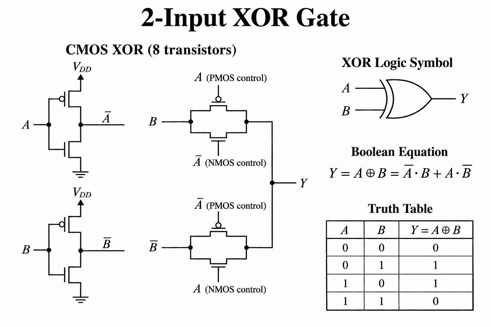
Removed the protruding strokes from all four transmission-gate transistor symbols.
Add the pass-gate drawing rule for future drawings.
請把傳輸閘的繪圖規則加進去，供以後畫圖使用。
I’ll save the rule: source and drain leads must end at the channel line without protruding beyond it, with a clear gap between the gate and channel.
Saved for future drawings: pass-gate leads end exactly at the channel, with no protruding strokes and a clear gate-to-channel gap.
Draw another two-input XOR gate without using pass gates.
請再畫一個雙輸入 XOR 邏輯閘，這次不要使用傳輸閘。
I’ll draw a 12-transistor static CMOS XOR circuit, with its logic symbol, Boolean equation, and truth table.
Draw a technically accurate educational figure '2-Input XOR Gate — Static CMOS', black lines on white background, serif mathematical lettering, landscape with roomy readable layout. This MUST be full complementary STATIC CMOS, NO pass gates or transmission gates. Exactly 12 MOSFETs total: 8 in main XOR network, 4 in two separate small CMOS inverters generating Abar and Bbar. MAIN SCHEMATIC on left: top pull-up network from VDD to output Y consists of TWO parallel-PMOS groups IN SERIES. First group: PMOS gate A and PMOS gate B in parallel from VDD to internal node P. Second group: PMOS gate Abar and PMOS gate Bbar in parallel from P to Y. Thus top has 4 PMOS. Bottom pull-down network from Y to GND consists of TWO SERIES-NMOS branches IN PARALLEL: left branch upper NMOS gate A then lower NMOS gate B; right branch upper NMOS gate Abar then lower NMOS gate Bbar. Thus bottom has 4 NMOS. Gates have text net labels rather than long control wires. Clearly label overbar signals using actual overbars. Adjacent to main network show two separate small conventional 2-transistor CMOS inverters, inputs A and B, outputs Abar and Bbar respectively, each PMOS connected to VDD and NMOS to ground; do NOT join the inverter outputs. Use exactly this network, no extra transistors. PMOS gate bubbles hollow, NMOS no bubbles. Filled wire junction dots at EVERY branch where 3 or more wire segments meet; no dots at simple two-wire corners or series nodes without branches. Channels and source/drain leads form clean elbows with no dangling protruding strokes; gate-channel insulating gaps remain clear. Upper right standard XOR logic symbol (OR outline with extra input curved line), inputs A B and output Y, no output bubble. Beneath it equation Y = A ⊕ B = Abar · B + A · Bbar using overbars over individual letters. Lower right truth table columns A B Y, rows 0 0 0; 0 1 1; 1 0 1; 1 1 0. Text label '12 transistors'. Prioritize correct topology and junction dots, readable transistor gate labels and conventional simplified CMOS symbols.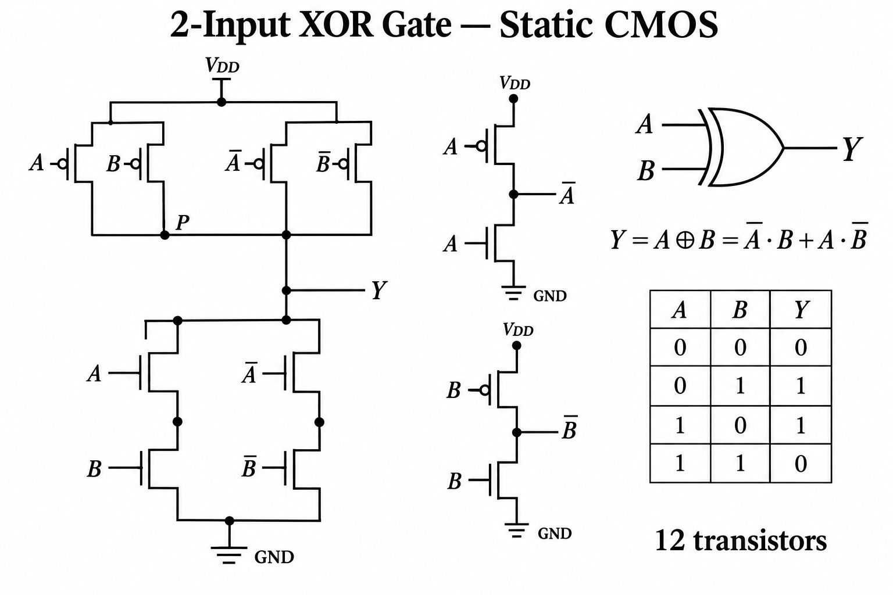
The generated pull-up network needs correction: the two parallel PMOS pairs must be connected in series. I’ll also remove dots from the unbranched NMOS connections.
Correct the main LEFT transistor schematic in this figure. Current PMOS network is WRONG: all four PMOS are in parallel. Replace it with TWO ROWS of PMOS pairs: top row two PMOS gates A and B in PARALLEL between VDD bus and middle internal bus P. Bottom row two PMOS gates Abar and Bbar in PARALLEL between middle bus P and lower bus Y. This creates two parallel groups IN SERIES, with four PMOS total. Explicit stack of top pair above bottom pair, not all side-by-side. Retain bottom NMOS network two parallel branches each with 2 NMOS in series (left A then B, right Abar then Bbar). Remove dots at the two NMOS intermediate series nodes (only two wires meet). Remove any dangling unused wire stubs. Filled dots ONLY at every true 3-or-more wire junction, never at supply endpoints or unbranched two-wire series nodes. Also remove filled dots at tops of the two small inverter VDD wires (endpoints), and add filled dots to each inverter input T-junction where input wire joins the two gate leads. Keep all 12 transistors, all hollow PMOS bubbles, clear separate inverter outputs, XOR symbol, equation and truth table intact. Expand left area vertically or fit the 4 PMOS in two distinct rows above the 4 NMOS. Correct electrical topology is paramount.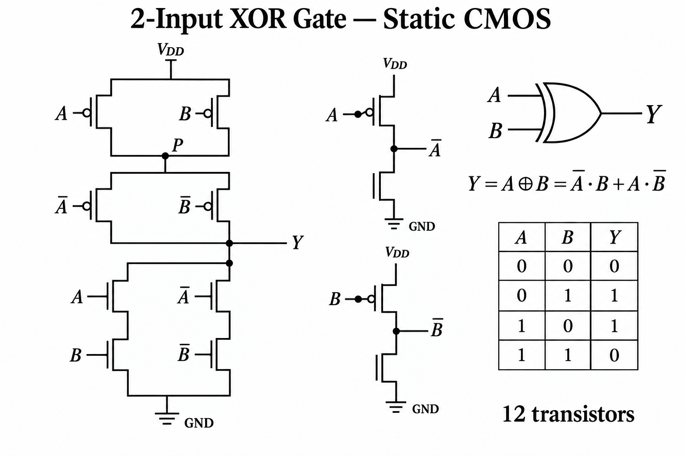
The main XOR network is now correct. I’ll finish the two input inverters by connecting each input to both transistor gates and fixing the remaining junction dots.
Make these exact corrections to the supplied figure while preserving its main XOR network topology, symbols, equation and truth table. 1. Repair each small inverter in the middle: input A must connect to BOTH PMOS and NMOS gates through a vertical common gate wire left of the transistors; input B likewise. Draw input A or B wire to middle of the vertical gate wire, with a filled T-junction dot. Vertical common gate wire branches to the PMOS gate bubble at top and to NMOS gate (no bubble) below. Current isolated dot on PMOS input alone is wrong: remove it. These must be conventional functional 2-transistor CMOS inverters, not disconnected NMOS gates. Keep their output Abar and Bbar separate and correctly labeled. 2. Add missing filled dots at three specific main-network T junctions: where VDD vertical wire meets top PMOS source bus, where vertical P interconnect meets lower PMOS source bus, and where GND vertical wire meets bottom NMOS source bus. Keep existing dot at upper P junction and output Y junctions. No filled dots at wire endpoints, two-wire elbows, or series NMOS midpoints. All other elements unchanged.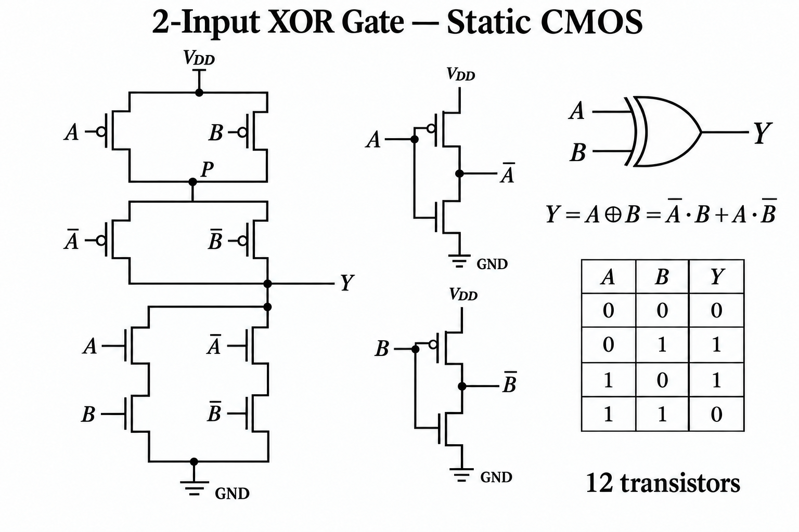
The figure is being updated with the inverter gate connections and the missing supply and ground junction dots.
Minimal exact one-dot edit ONLY. In the LEFT main XOR schematic add ONE filled black circular junction dot at the T junction where the vertical wire descending from internal node P meets the horizontal source bus above the LOWER PMOS pair (gates Abar and Bbar). Location approximately x370 y388 in this 1536x1024 image. There is currently already a dot just above it at x370 y350; retain it and add the missing dot at x370 y388. Match existing dot radius. Preserve literally every other line, label, transistor symbol, inverter, equation, truth table and dot. Do not redraw other elements.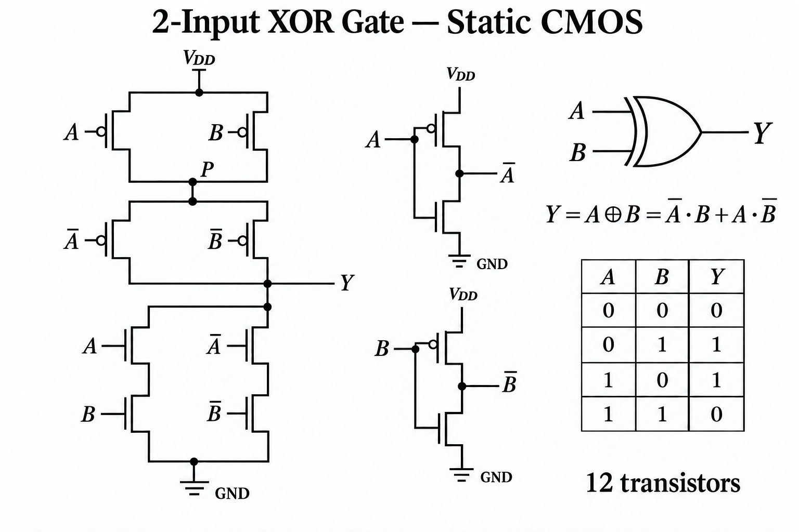
Created a 12-transistor static CMOS XOR figure, including the logic symbol, Boolean equation, and truth table.